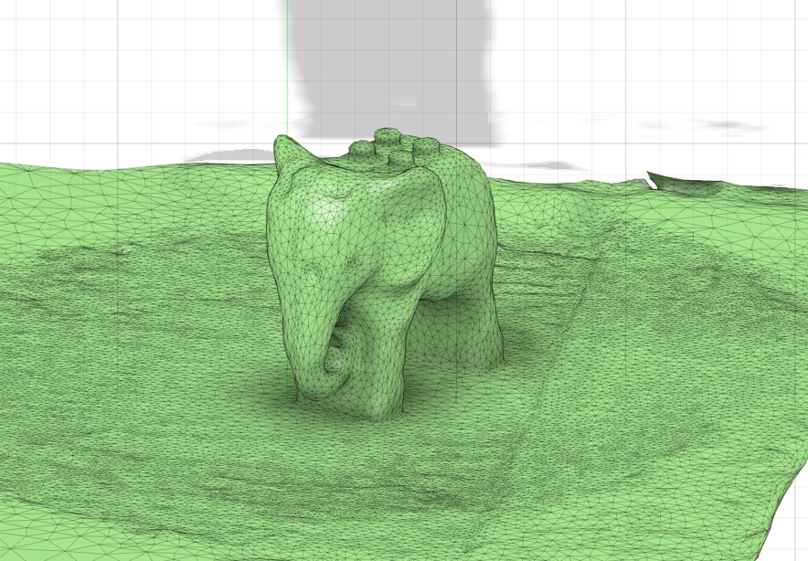

Verkefni 3
3D prentun og 3D skönnun


Inngangur
Markmið þessa verkefnis er að hanna og framleiða lítinn hlut með 3D prentun sem erfitt eða ómögulegt væri að framleiða með hefðbundnum frádráttaraðferðum. Fyrst verða gerðar prófanir á prentaranum til að sjá hvaða skorður og hönnunarreglur þarf að hafa í huga. Síðan verður hluturinn prentaður og farið yfir hvað lærðist af ferlinu. Einnig verður einn hlutur 3D skannaður sem hluti af verkefninu.
3D prentun
Undirbúningur

Ég byrjaði á því að kynna mér verkefnalýsinguna og verkefnið með því að horfa á myndbönd frá kennara um verkefnalýsingu fyrir Verkefni 3. Eftir það fór ég á síðuna Printables og skoðaði hvað væri hægt að 3D-prenta.
Ég hugsaði strax um að mig langaði að 3D-prenta eitthvað sem ég gæti notað á heimilinu og eitthvað sem gæti gagnast mér í daglegu lífi. Þá fór ég að skoða alls konar hugmyndir fyrir eldhúsið og fann loksins eitthvað sem ég kalla svampabox. Hugmyndina má sjá hér til hægri.
Ferlið
Forsendur
Eins og nefnt var í inngangi átti að hanna eitthvað sem ekki var hægt að framleiða með hefðbundinni frádráttaraðferð. Til að kynna mér það nánar las ég mig til um á síðunni Formlabs. Þá gat ég áttað mig á því að hönnunin sem mig langaði að búa til passaði vel við þessar forsendur. Samkvæmt Formlabs hentar 3D-prentun sérstaklega vel fyrir litla og flókna hluti, en hefðbundin frádráttaraðferð hentar frekar stærri og einfaldari hlutum. Hönnunin mín er með innra hólf, op að framan, rúnnuð horn og mörg smáatriði í botninum, sem myndi gera framleiðslu með hefðbundinni subtractive-aðferð flókna og óhagkvæma ef hluturinn ætti að vera framleiddur í einu lagi. Þess vegna tel ég að þessi hönnun henti betur fyrir 3D-prentun en hefðbundna frádráttaframleiðslu.
Hönnun
 Ég byrjaði á því að hanna hlutinn í
Autodesk Fusion.
Byrjað var á því að teikna botninn og síðan veggina í skissu, allt í sketch.
Að lokum voru bætt við alls konar fínpússi, eins og upphleyptum hringjum í botninn og lítilli rönd sem fer í kring um allt boxið.
Röndin sem teiknuð var var skorin inn í boxið og síðan var bætt við chamfer-eiginleikanum í Fusion.
Einnig var hönnuð lítil „rennibraut“ þar sem vatnið úr svampinum gæti lekið út.
Hér til hliðar má sjá hönnunina tilbúna í Fusion.
Einnig má skoða 3D-líkan af svampaboxinu hér fyrir neðan:
Ég byrjaði á því að hanna hlutinn í
Autodesk Fusion.
Byrjað var á því að teikna botninn og síðan veggina í skissu, allt í sketch.
Að lokum voru bætt við alls konar fínpússi, eins og upphleyptum hringjum í botninn og lítilli rönd sem fer í kring um allt boxið.
Röndin sem teiknuð var var skorin inn í boxið og síðan var bætt við chamfer-eiginleikanum í Fusion.
Einnig var hönnuð lítil „rennibraut“ þar sem vatnið úr svampinum gæti lekið út.
Hér til hliðar má sjá hönnunina tilbúna í Fusion.
Einnig má skoða 3D-líkan af svampaboxinu hér fyrir neðan:
Prófun
 Eftir að ég hafði hannað svampaboxið kom að því að ég þurfti að framkvæma prófun til þess að ákvarða hönnunarreglur og skorður áður en módelið yrði prentað.
Eins og sést hér til vinstri exportaði ég skrána sem 3MF til þess að færa hana inn í
PrusaSlicer.
Eftir að ég hafði hannað svampaboxið kom að því að ég þurfti að framkvæma prófun til þess að ákvarða hönnunarreglur og skorður áður en módelið yrði prentað.
Eins og sést hér til vinstri exportaði ég skrána sem 3MF til þess að færa hana inn í
PrusaSlicer.
Þegar ég var búin að opna 3MF-skrána í PrusaSlicer gat ég breytt beginner mode yfir í expert mode til að fá fleiri eiginleika. Ég gat einnig búið til negative volume með boxi til þess að hanna litla testhlutann minn. Ég ákvað að prófa að prenta eitt hornið, með öllum stærðum af hringjum, í fullri stærð. Þá gat ég séð hvort hringirnir í botninum prentuðust rétt út, ásamt fillet í hornunum og röndinni á hliðunum. Myndir af stillingum í PrusaSlicer má sjá hér að neðan:


Eftir að ég var búin að búa til tvö box til þess að skera út bara hornið leit þetta svona út í PrusaSlicer:

Test í PrusaSlicer, negative volume bætt við
Næst var þá bara að ýta á slice now og byrja að prenta testið. Það tók aðeins um 40 mínútur. Fyrir neðan má sjá myndir af því þegar þetta er nýkomið úr prentaranum:


Prentun

Mér fannst testið koma mjög vel út. Hringirnir prentuðust vel, ásamt öllum fillet. Röndin kom einnig mjög vel út og gerði mikið fyrir útlit boxins. Þá var ekkert annað í stöðunni en að setja af stað módelið í heilu lagi. Hér til hliðar má sjá hvernig það leit út í PrusaSlicer.
Sömu stillingar voru notaðar fyrir allt svampaboxið í PrusaSlicer. Þær má sjá hér til vinstri.
Næst var ýtt á slice now og Maggi leiðbeinandi hjálpaði með restina að færa yfir í 3D-prentarann og ákveða stillingar þar.
Lokaútkoma


3D skönnun
Undirbúningur
Það var nú ekki mikið sem ég þurfti að undirbúa til þess að byrja að 3D skanna en ég byrjaði á því að skoða síður fyrrum nemenda til þess að athuga hvaða forrit þau notuðu til þess að framkvæma þennan hluta. Ég fór yfir margar heimasíður og sá þá að flestir voru að vinna með Polycam. Ég ákvað að nota það einnig og byrjaði að læra á forritið, sem reyndist mjög auðvelt.
Ferlið
 Ég ákvað að 3D skanna fyrst blómavasa heima hjá bróður mínum. Það kom
ekki svo vel út þar sem hann var á borði en ég gat ekki
labbað í kringum allt borðið til þess að taka myndir. En í Polycam tók ég um 20 myndir í fyrstu tilraun
og um 60 myndir í seinni. Til þess að vista skránna sem stl þurfti ég að gera free trial en ég hætti síðan við það
um leið og ég var búin að vinna í þessu. Þar næst bjó ég til aðgang á
Sketchfab og hlóð inn stl skránnum mínum þar sem má
skoða Hér.
Blómavasann má sjá hér til hægri og
fyrsta og önnur tilraun má sjá hér að neðan:
Ég ákvað að 3D skanna fyrst blómavasa heima hjá bróður mínum. Það kom
ekki svo vel út þar sem hann var á borði en ég gat ekki
labbað í kringum allt borðið til þess að taka myndir. En í Polycam tók ég um 20 myndir í fyrstu tilraun
og um 60 myndir í seinni. Til þess að vista skránna sem stl þurfti ég að gera free trial en ég hætti síðan við það
um leið og ég var búin að vinna í þessu. Þar næst bjó ég til aðgang á
Sketchfab og hlóð inn stl skránnum mínum þar sem má
skoða Hér.
Blómavasann má sjá hér til hægri og
fyrsta og önnur tilraun má sjá hér að neðan:
Fyrsta tilraun
Seinni tilraun
 Hér fyrir ofan má sjá tilraunirnar tvær og þar sést að seinni tilraunin kom
mikið betur út, enda var vasinn færður á annað borð og tekið mun fleiri myndir. Mér fannst þetta samt svo skemmtilegt verkefni þannig ég ákvað að skanna
eitt í viðbót. Ég ákvað að skanna dóta LEGO-fíl sem litla frænka mín á. Mig langaði
að athuga hvort að skanninn myndi ná öllum eiginleikum hans og honum tókst það býsna vel
eins og sjá má hér að neðan.
Hér fyrir ofan má sjá tilraunirnar tvær og þar sést að seinni tilraunin kom
mikið betur út, enda var vasinn færður á annað borð og tekið mun fleiri myndir. Mér fannst þetta samt svo skemmtilegt verkefni þannig ég ákvað að skanna
eitt í viðbót. Ég ákvað að skanna dóta LEGO-fíl sem litla frænka mín á. Mig langaði
að athuga hvort að skanninn myndi ná öllum eiginleikum hans og honum tókst það býsna vel
eins og sjá má hér að neðan.
3D skönnun af Lego fíl
Lærdómur
Í þessu verkefni lærði ég mikið um ferlið í kringum 3D prentun og 3D skönnun. Ég fékk betri skilning á því hvernig 3D prentari virkar í framkvæmd og hvað þarf að hafa í huga áður en hlutur er prentaður. Einnig lærði ég enn betur að hanna í Fusion og varð öruggari í að nota forritið til að búa til eigin líkön. Auk þess kynntist ég PrusaSlicer betur og lærði helstu atriði sem tengjast undirbúningi fyrir prentun. Í 3D skönnunarhlutanum lærði ég einnig að nota Polycam og sá hvernig fjöldi mynda og aðstæður geta haft áhrif á lokaútkomuna.
Hér fyrir neðan má skoða öll hönnunarskjöl: